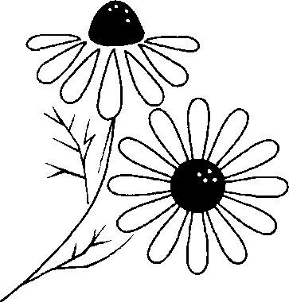
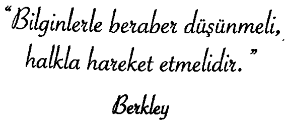
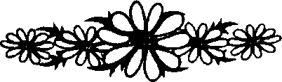

Bir zamanlar, bir kralın aklına şöyle bir düşünce geldi: ‘Eğer bir işe ne zaman başlayacağımı; kimi dinleyeceğimi ve yapmam gereken en önemli şeyin ne olduğunu bilseydim, girdiğim her işi başarırdım.’
Krallığın dört bir yanma, kim kendisine her iş için en uygun vakti, o iş için en gerekli kişinin kim olduğunu ve yapılması gereken en önemli şeyin ne olduğunu öğretirse, ona büyük bir mükâfat vereceğine ilan etti.
Bilginler, kralın huzurunda toplandı fakat sorulara verdikleri yanıt birbirinden tamamen farklı çıktı. Doğru yanıtları alamayan kral, bilgeye danışmaya karar verdi ve onu ziyaret etmek için yola çıktı. Kral geldiğinde bilge, çiçek tarhlarını kazıyordu. Kralı gördü, selamlayıp kazmaya devam etti. Bilge, mecalsiz ve zayıf birisiydi. Kral merak ettiği soruları ona sordu.
Bilge kralı dinledi ama ona yanıt vermedi. Avuçlarına tükürüp, kazmaya devam etti. Bilgenin yorgun olduğunu gören kral yardım teklif etti. Bilge kabul edince de kazmaya başladı. Kral, tarh kazdıktan sonra, sorularını tekrarladı ama yine bir yanıt damadı. Bunun üzerine kral konuştu:
“Ey bilge kişi, senin yanma sorularıma bir yanıt bulmak için geldim. Eğer yanıt vermeyeceksen, söyle de evime gideyim.
O sırada, koşarak oraya gelmekte olan bir adam gördüler. Adam yaralıydı. Beraberce ilgilenip adamı tedavi ettiler. Sabah uyanınca, kralın kendisine baktığını gören adam konuştu:
“Beni affedin. Ben, kardeşimi astırdığınız ve mallarını elinden aldığınız için sizden öç almaya yemin etmiş bir düşmanınızım. Ama yolda muhafızlarınız beni fark etti ve yaralı olarak ellerinden zor kurtuldum. Şimdi görüyorum ki hayatımı kurtardınız.”
Kral düşmanlarıyla bu kadar kolay barıştığı ve onun dostluğunu kazandığı için çok mutlu oldu; onu affetmekle kalmayıp, uşaklarını ve kendi doktorunu gönderip onun tedavisini yaptıracağını söyledi. Ayrıca mallarını iade edeceğine de söz verdi.
Yaralı adamla vedalaşan kral, kapının önüne çıkıp bilgeyi aradı. Gitmeden önce, sormuş olduğu sorulara yanıt vermesini bir kez daha rica etmek istiyordu. Bilge dışarıda, bir gün önce kazmış oldukları tarhlara çiçek tohumlarını ekiyordu. Kral ona yaklaştı ve şöyle dedi:
“Sorularıma yanıt vermeniz için size son defa yalvarıyorum!”
“Anlayamıyorsunuz. Dün, eğer benim dermansızlığıma acımayıp, şu tarhları kazmasaydınız, gidecek ve şu adamın saldırısına uğrayacak, yanımda kalmadığınıza pişman olacaktınız. Yani en önemli vakit, tarhları kazdığımız vakitti, en önemli kişi bendim ve en önemli işiniz bana iyilik yapmaktı. Daha sonra bu adam yanımıza koşarak geldiğinde, en önemli vakit onunla ilgilendiğiniz vakitti; çünkü eğer onun yaralarını sarmasaydiniz, sizinle barışmadan ölecekti. Dolayısıyla en önemli kişi oydu, en önemli iş de onun için yaptıklarınızda
“Bundan sonra şu gerçeği unutmayın: Tek önemli vardır, içinde bulunduğunuz an. O an, en önemli vakittir. Çünkü sadece o zaman elimizden bir şey gelebilir. En önemli kişi, kiminle beraberseniz, odur. Zira hiç kimse bir başkasıyla bir daha görüşüp, görüşemeyeceğini bilemez ve en önemli iş, iyilik yapmaktır. Çünkü insanın bu dünyaya gelmesinin tek sebebi budur.”